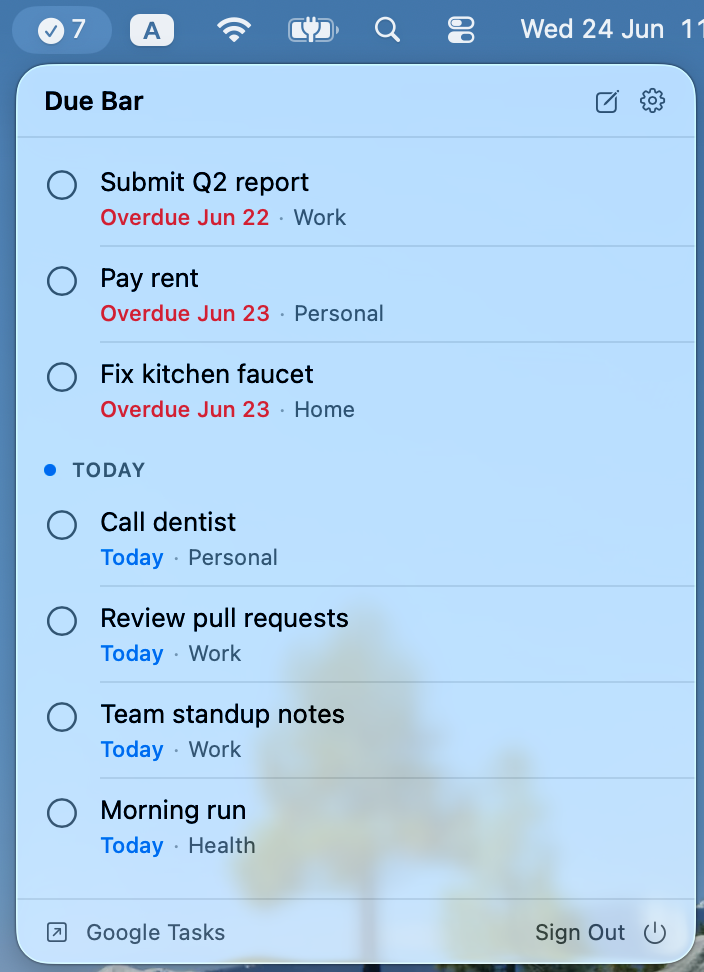
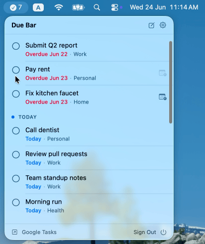
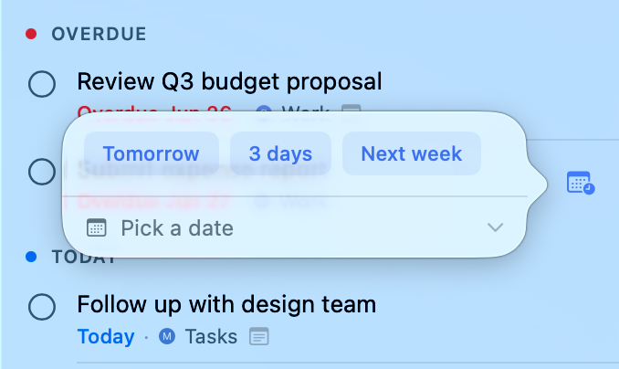
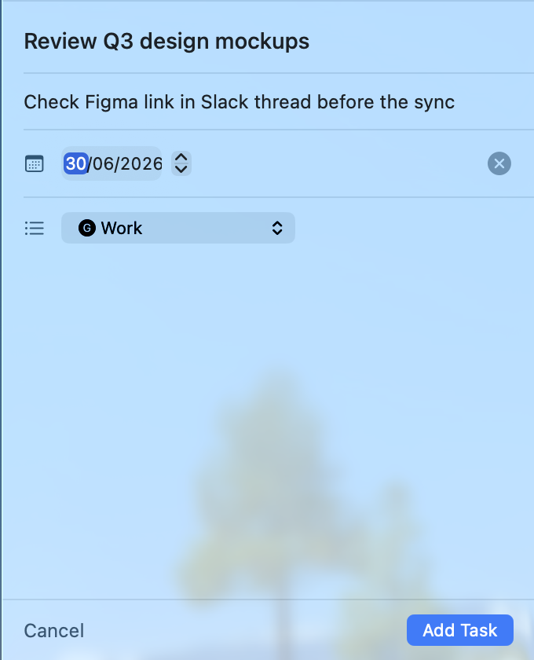

A lightweight macOS menu bar app that keeps your tasks front and center — no windows, no switching.

Tasks from every Google Tasks list — Work, Personal, Home, whatever you have — show up together, sorted by due date. No switching between lists.

Click the circle next to any task to mark it complete. It disappears instantly — no confirmation dialogs, no friction.

Right-click any task to push it to tomorrow, three days out, or next week. Or pick a specific date — all without leaving the menu bar.

Hit the compose button to create a task with a title, notes, due date, and list — then get straight back to work.